A continuous frontage
Repeated canopy supports and wall elements connect the seating area into one recognisable exterior.
A selection of stand, pop-up store and café concepts developed during my internship at ProDesign.

These projects were developed during my internship at ProDesign. The collection includes a café exterior, an initial and refined Puma pop-up proposal, and a Rioba coffee-festival stand. Each translates a different brief into a physical environment through form, display, lighting and visualisation.
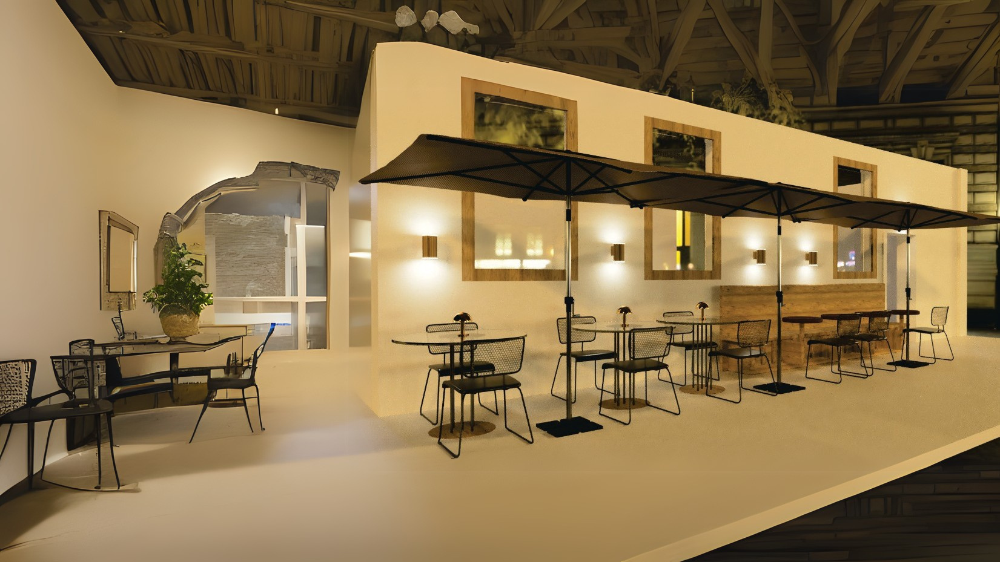

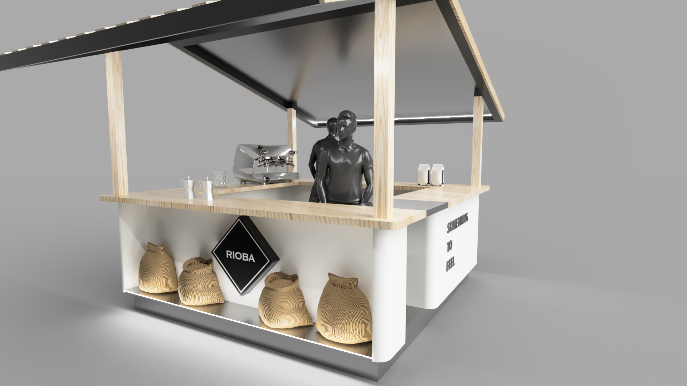
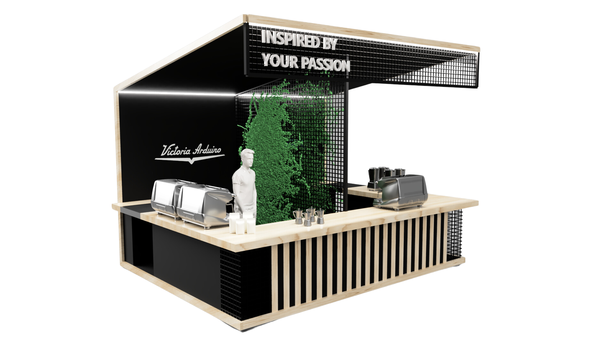
The brief was to create a warm, cosy exterior that encourages people to relax and enjoy their time. The design combines outdoor seating with a consistent canopy and lighting treatment across the café frontage.
The renders show tables and stools along the façade, a covered edge and wall lighting that establishes the atmosphere. Overall and close-up views explore how the street-facing space reads from a distance and feels at seating level.
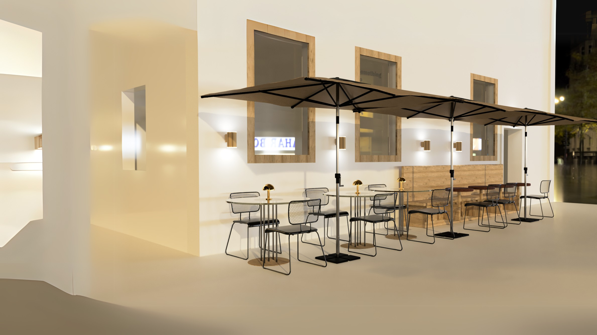
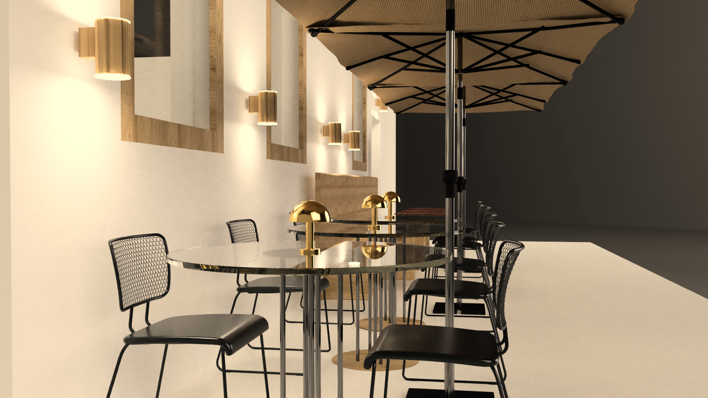
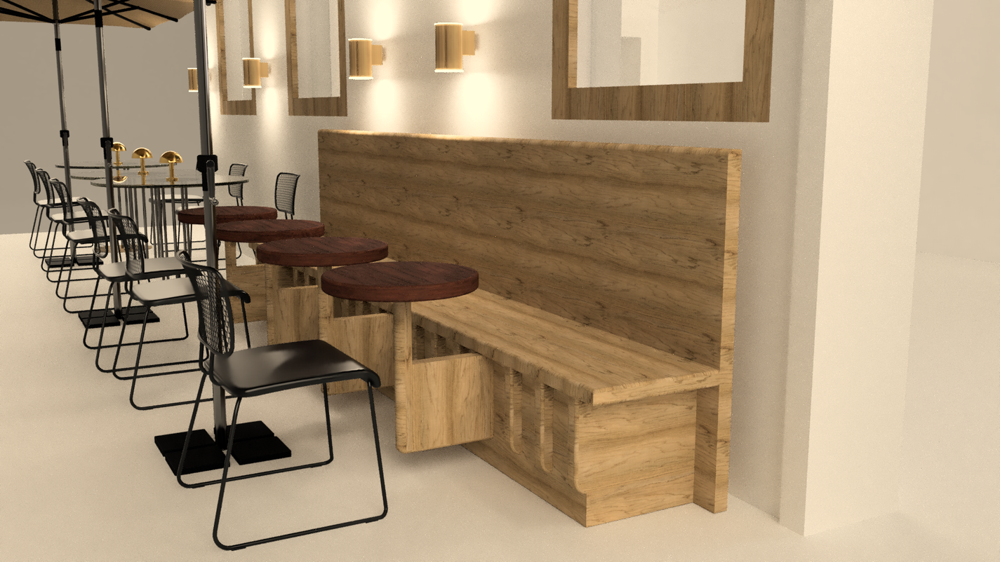
Repeated canopy supports and wall elements connect the seating area into one recognisable exterior.
Warm light and the material palette support the relaxed, welcoming character described in the brief.
The initial proposal was developed for shopping-mall placement. It combines Puma’s bold athletic identity with modular, easily installed elements intended to create a strong presence within a limited retail footprint.
An open frame defines the stand without fully enclosing it. Clothing rails, shoe display and brand graphics occupy different faces, allowing the concept to be understood from more than one approach.
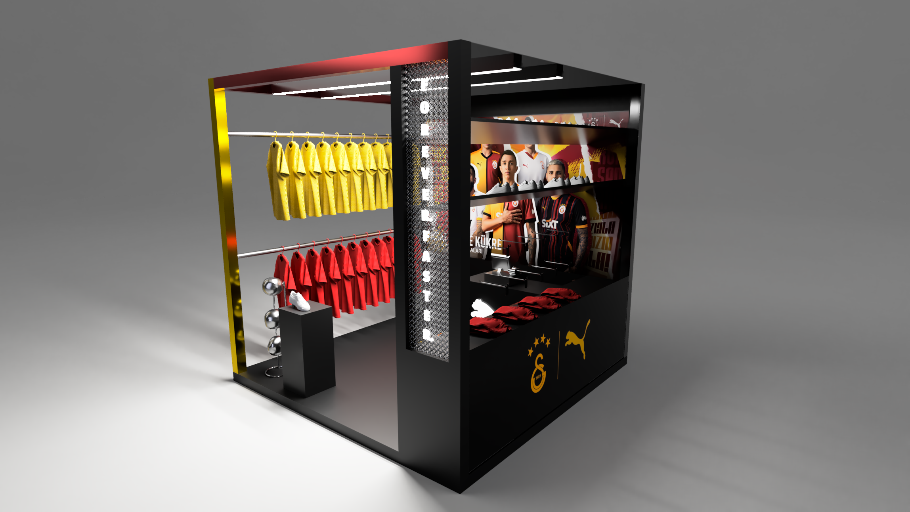
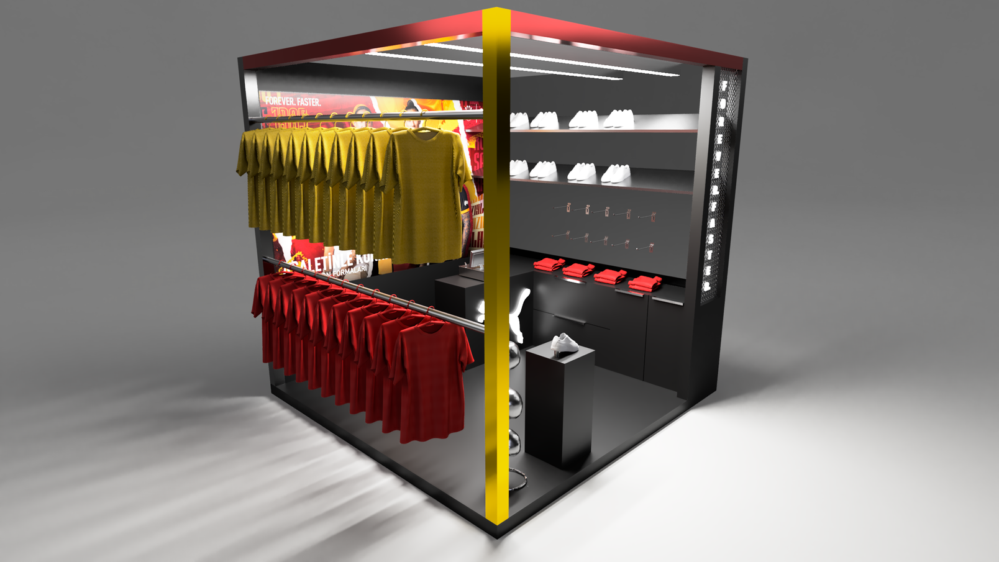
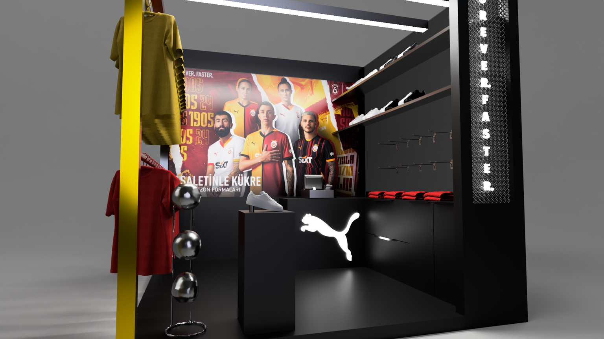
Develop a compact, easily installed spatial structure appropriate to a temporary retail setting.
Use a bold frame, graphic surfaces and visible product to express the brand in a shared mall environment.
Distribute apparel and footwear across the stand rather than relying on one front-facing elevation.
The final version was refined in response to the brand’s feedback, with visibility, functionality and fit with the retail strategy as the stated priorities.
The developed proposal has a more open, walk-in arrangement. A branded overhead frame, perimeter product display, central presentation unit and green floor define the retail area. The surrounding perspective illustrates how the stand reads within a larger interior.
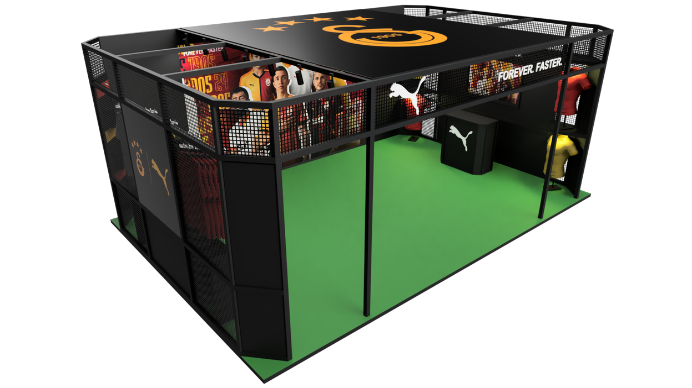
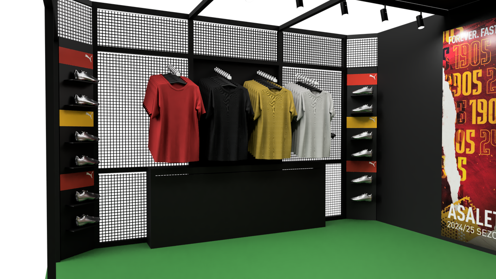
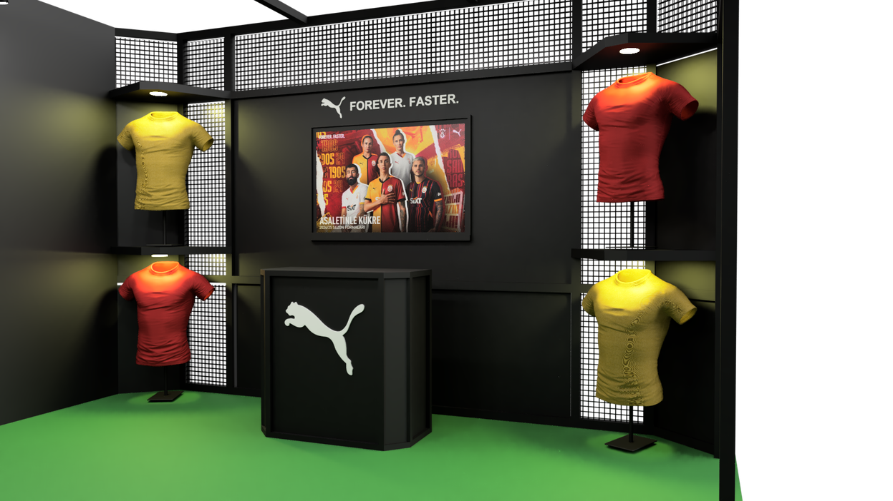
| Initial proposal | Refined proposal |
|---|---|
| A compact display structure organised around several exterior faces. | A walk-in retail area with an open perimeter and clearer internal circulation. |
| Product and graphics concentrated within a small modular frame. | Product displays distributed around the perimeter with an additional central presentation element. |
| Strong visual impact through contrasting graphics and structural edges. | A continuous overhead identity and defined floor area establish a larger, cohesive brand space. |
The Rioba stand was developed for a coffee festival, with the aim of expressing a premium identity while remaining inviting and functional in a competitive event environment.
A roof-like frame establishes a visible silhouette above the service counter. Faceted shelving on the visitor-facing side, a clear working surface and the coffee equipment organise the stand at counter level. Alternate perspectives document the service side and the overall structural composition.
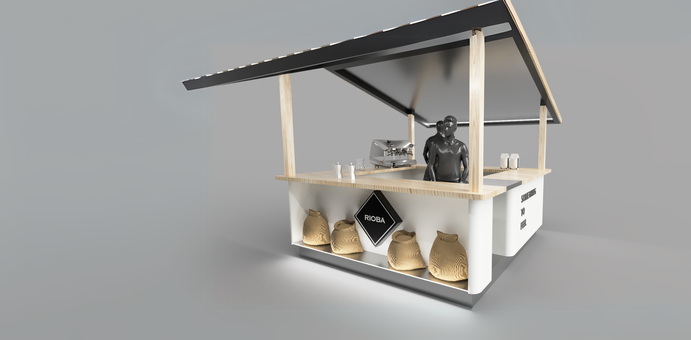
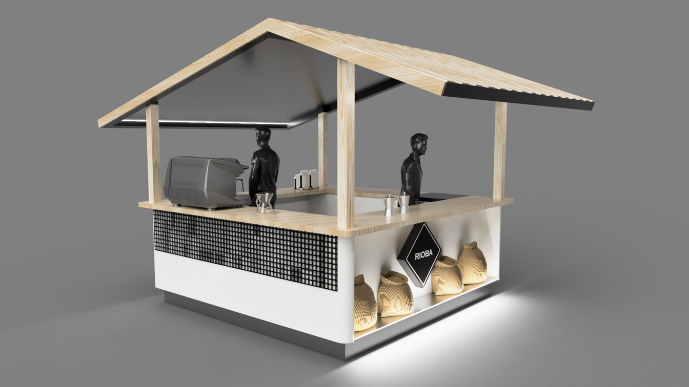
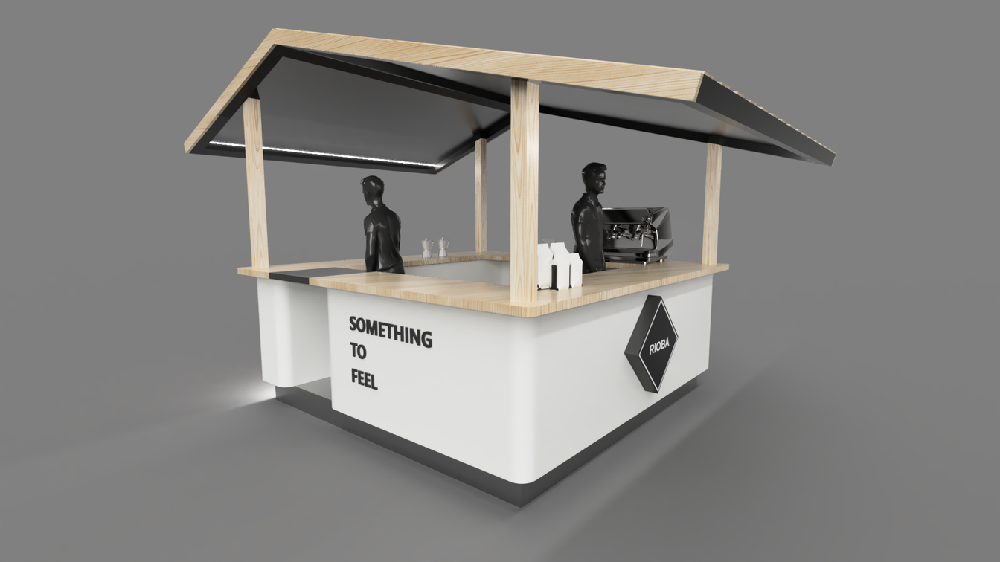
The elevated roof frame helps distinguish the stand in a crowded festival setting.
The open visitor-facing edge makes the service area easy to approach.
Material contrast, restrained colour and geometric display details carry the intended brand expression.